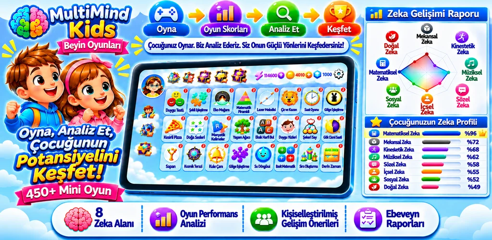
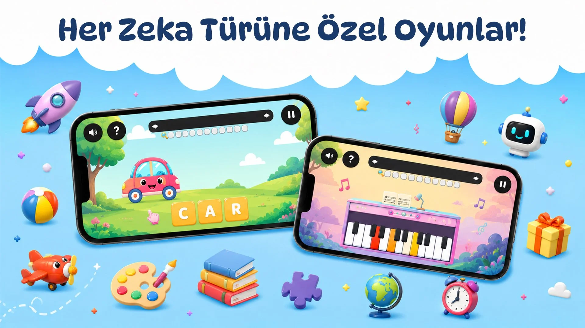
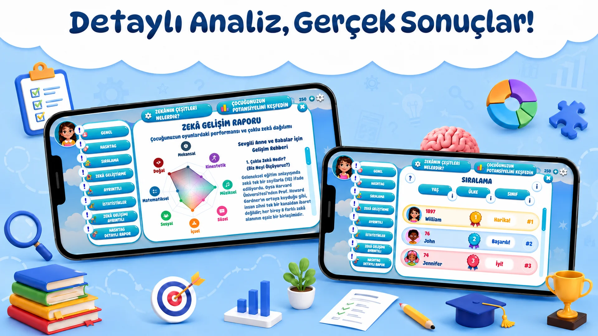
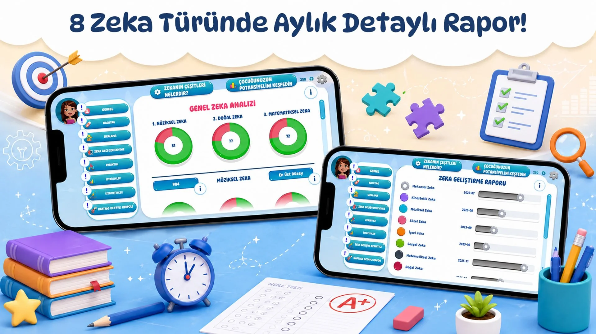
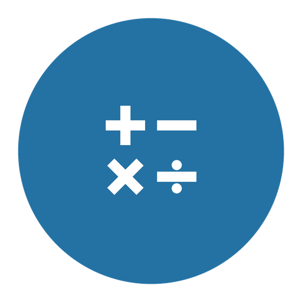
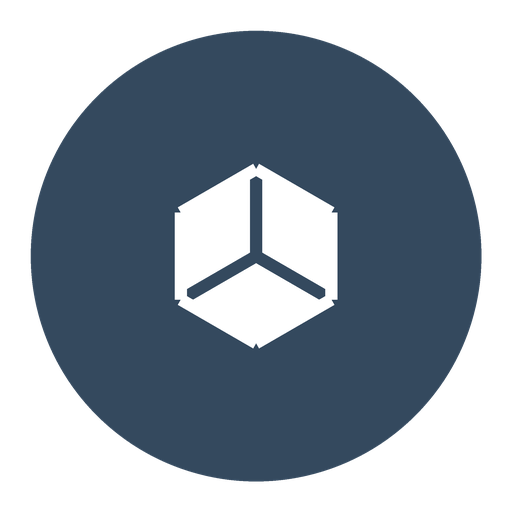
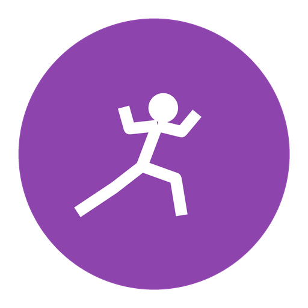
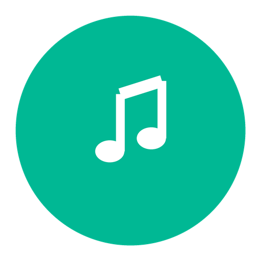

MultiMind Kids Brain Games
Howard Gardner'ın Çoklu Zekâ Modeli üzerine inşa edilen MultiMind Kids; terazilerden dişlilere, optik aynalardan örüntülere kadar 30 farklı dokunsal ve fiziksel mekanikle çocukların zihin potansiyelini destekler.
3 zorluk seviyesi (Kolay, Orta, Zor) · Aile paylaşımına uygun · Çevrimdışı oynanabilir

MultiMind Kids'i hareket halinde izleyin
Çoklu zekâ kuramına dayalı dokunsal mini oyunlarımızı ve çocuk dostu oynanışı tanıtım videomuzda inceleyin.
MultiMind Kids ekran görüntüleri
Çocukların görsel algısını destekleyen pastel renkler, büyük dokunma alanları ve pedagojik mini oyunlar.





8 çoklu zekâ alanı desteklenir
Her çocuk kendine has bir öğrenme stiline sahiptir. MultiMind Kids, güçlü yönleri beslerken gelişime açık alanları oyunla destekler.
Zekâ Gelişim Raporu (Intelligence Radar)
Çocuğunuzun oyunlardaki hamlelerinden beslenen 8 eksenli bilişsel gelişim haritası
Sevgili Ebeveyn,
Geleneksel tek tip testlerin aksine çocuğunuzun zekâsı tek bir nota indirgenemez. Oyun içi 8 eksende toplanan veriler, çocuğunuzun doğal öğrenme kanalını açığa çıkarır.
Mantıksal-Matematiksel (%95) ve Görsel-Mekânsal (%88). Problem çözerken desenleri ve yönleri hızla kavrıyor.
Müziksel ve Sosyal alanlar. Ritimli oyunlar ve işbirlikli bulmacalarla dengeli gelişim sağlanabilir.
Birlikte legolarla bir su kanalı inşa edin; geometrik blokları sayarken arkada hafif bir müzik açarak her iki alanı köprüleyin.

Mantıksal & Matematiksel
Örüntüler, terazi dengeleri, sayma, sıralama ve neden-sonuç mekanizmaları.

Görsel & Mekânsal
Perspektif tamamlama, silüet eşleştirme, döndürme bulmacaları ve labirentler.

Bedensel & Kinestetik
Hassas dokunuşlar, sıvı doldurma, parmakla dilimleme ve motor koordinasyonu.
Doğacı Zekâ
Hayvan yaşam alanları, tohumdan ağaca yaşam döngüleri ve ekolojik farkındalık.

Müzikal & Ritmik
Ritim takibi, Simon Says ses dizilimleri ve ton ayırt etme alıştırmaları.
Sözel & Dilsel
6 dilde seslendirme, hece trenleri ve kelime-görsel eşleştirmeleri.
Sosyal & Kişilerarası
Empati geliştirme, beden dili okuma, paylaşma ve duyguları tanıma etkinlikleri.
İçsel & Bireysel
Derin nefes egzersizleri, odaklanma, sakinleşme ve özdenetim pratikleri.
Ebeveynler için sıkça sorulan sorular
Oyunda reklam var mı?
Hayır. MultiMind Kids içinde hiçbir üçüncü taraf pop-up reklam, yönlendirme veya çocukların yanlışlıkla tıklayabileceği reklam kuşakları bulunmaz.
Hangi yaş grubu için uygundur?
Oyunumuz 3 ile 8 yaş arasındaki okul öncesi ve ilkokul çağı çocukları için 3 kademeli (Kolay, Orta, Zor) olarak tasarlanmıştır.
İnternet bağlantısı gerekir mi?
Oyun cihazınıza indirildikten sonra seyahatlerde, uçakta veya internetin olmadığı her yerde çevrimdışı olarak oynanabilir.
Çocuğumun verileri toplanıyor mu?
Hayır. Cezeri Games olarak çocukların gizliliğine tam saygı gösteriyoruz. İsim, konum veya kamera/mikrofon gibi kişisel veriler talep edilmez. Detaylar için Gizlilik Politikamızı inceleyebilirsiniz.